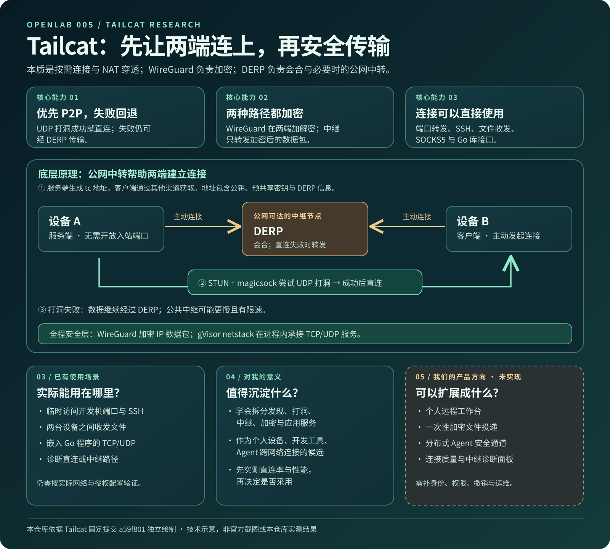

CONNECT
穿透与回退
经 DERP 会合，用 STUN 与 UDP 打洞尝试直连。直连不可用时仍可经中继通信。
Tailcat 的核心是跨网络连通：优先建立 P2P 直连，失败时使用 DERP 中继。WireGuard 加密贯穿两条路径，支撑文件、端口和 SSH 等实际传输。
从“能不能连上”到“直连还是中继”，再到“适合做什么”：下面的图将已实现能力与我们的产品设想放在同一个视图里。

这些是上游已有的能力，分别通过 CLI 模式或 Go 库使用；开放哪些服务由运行者决定。
经 DERP 会合，用 STUN 与 UDP 打洞尝试直连。直连不可用时仍可经中继通信。
两端建立加密隧道。服务端地址默认带预共享密钥，分享地址需要像分享凭证一样谨慎。
标准输入输出、端口转发、SOCKS5、SSH、SFTP 文件服务和出口节点。
可在应用中建立或接收 TCP/UDP 连接，按需编排自己的服务。
提供 ping 与性能测试，区分直连和 DERP 路径；本研究尚未做实际测量。
上游 WASM 演示可收发文本和文件；浏览器流量目前仅经 DERP。
Tailcat 不使用 Tailscale 控制平面；服务端地址需要通过聊天等带外渠道交给客户端。两端主动连向公网可达的 DERP 会合，再尝试直接 UDP 连接。
两端通过 STUN 与路径发现获得候选端点，UDP 打洞成功后，数据从 DERP 路径升级为直接传输。
它是一台双方都能从内网主动连到的公网服务器。最初帮助两端取得联系；打洞失败时继续替双方转发数据。它不需要解密 WireGuard 的应用流量。Tailcat 可使用公共 DERP，也允许自建。
它是基于密钥的加密隧道协议：两端认证彼此，把 IP 数据包加密后经 UDP 传输。它负责“传得安全”；寻找直连路径与中继回退由 Tailcat 的其他网络组件处理。
下面分开列出上游已有的使用方式和我们的后续设想。实际使用仍需按服务配置权限，并在目标网络里验证路径。
将远端网页、数据库等指定端口转发到本机访问，不必为服务打开公网入站端口。
在明确授权的前提下连接自己的远端设备。高权限服务应叠加客户端密钥验证。
按只读、可写或接收箱模式收发文件；共享范围由服务端设定。
把个人电脑、开发服务和调试端口汇成按需访问入口；还需设备清单、细粒度权限、密钥轮换与撤销。
基于文件收发能力提供限时接收箱；还需配额、过期清理、文件安全检查和收件人授权。
用 Go 库连接不同网络里的 Agent 或设备；还需任务协议、节点身份、权限、审计与故障恢复。
可视化直连率、DERP 回退、时延和带宽，帮助判断网络瓶颈；需要采集、历史记录与自建中继运维。
最值得沉淀的是它把连接问题拆成可观察、可替换的层次；未来是否采用，仍要靠真实网络实验判断。
地址交换、身份授权、会合中继、路径优化、加密和应用服务彼此分层。这套结构可供未来的跨设备工具参考。
先把它当作个人设备间按需连接的候选方案；暂不把它等同于多人设备管理或完整权限平台。
若接入分布式 Agent，还需设计设备身份、密钥轮换、授权撤销、任务协议、审计与故障恢复。
从两台设备、一个授权端口和临时密钥开始，分别记录连接成功率、直连率、路径、时延与吞吐。当前没有这些实测数据。
本页依据 2026-09-28 查阅的固定提交 a59f801：连接原理、功能说明、安全边界。更详细的证据与未验证项见仓库子项目 research.md。上游许可证：BSD-3-Clause。